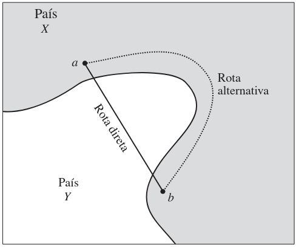

Sinais e Sistemas
Revisão de Números Complexos
Professor: Gabriel Soares Baptista
Introdução
Base Fundamental: Conteúdo essencial para Sinais e Sistemas.Objetivo: Consolidação teórica para aplicação em análise de frequência e sistemas lineares.Conceito: Números complexos não são "irreais"; a estranheza vem da falta de familiaridade.
O termo imaginário é histórico e infeliz. Se tivessem outro nome, seriam aceitos tão facilmente quanto números negativos ou irracionais.
Nota Histórica - I
Evolução Numérica
Naturais: Contagem discreta (elementos).Frações: Necessidade agrícola (medidas contínuas).Irracionais: Pitágoras e a diagonal do quadrado ($\sqrt{2}$).Negativos: Contabilidade medieval e renascentista (débito/crédito).
Nota Histórica - II
O Surgimento dos Imaginários
Impasse: Equações como $x^2 + 1 = 0$ resultam em $x^2 = -1$.Definição de Euler (1777): $i = \sqrt{-1}$.Engenharia Elétrica: Utilizamos $j$ para evitar confusão com corrente elétrica ($i$).
$j^2 = -1$ e $\sqrt{-1} = \pm j$
Exemplo:
Nota Histórica - III
A Verdadeira Motivação: Equações Cúbicas
Ao contrário do senso comum, não foi $x^2+1=0$ que forçou a aceitação, mas sim equações cúbicas como $x^3 - 15x - 4 = 0$.
Fórmula de Cardano: Resultava em raízes de negativos: $\sqrt[3]{2 + \sqrt{-121}}...$Bombelli: Tratou os imaginários como "veículo" para chegar à solução real.Solução Real: $4$.
Teorema Fundamental da Álgebra (Gauss)
Toda equação de $n$-ésima ordem possui exatamente $n$ soluções (raízes) no plano complexo.
Analogia Geográfica
A utilidade dos complexos ($Y$) para resolver problemas reais ($X$).

O caminho mais curto entre dois pontos reais pode passar pelo território complexo.
Álgebra de Números Complexos
Representação Cartesiana
$$z = a + jb$$
Parte Real: $Re\ z = a$ (Eixo Horizontal)Parte Imaginária: $Im\ z = b$ (Eixo Vertical)
Representação Polar
Coordenadas $r$ e $\theta$
Relacionamento trigonométrico:
A Fórmula de Euler
$$e^{j\theta} = \cos \theta + j \sin \theta$$
Logo, a forma exponencial é:
Conversão e Propriedades
Para converter entre $(a, b)$ e $(r, \theta)$:
Módulo:
Ângulo (Fase):
Inverso:
Exemplo B.1 - Análise de Quadrantes
A matemática tem suas pegadinhas. Cuidado com a calculadora e a posição do ponto.
(a) $2 + j3$ (1º Quadrante)
Módulo : $$|z| = \sqrt{2^2 + 3^2} = \sqrt{13}$$
Ângulo : $$\angle z = \tan^{-1} \left( \frac{3}{2} \right) = 56,3^\circ$$
A calculadora fornece o valor correto diretamente.
$$\boxed{2 + j3 = \sqrt{13} e^{j56,3^\circ}}$$
Exemplo B.1 - Continuação
(b) $-2 + j1$ (2º Quadrante)
Módulo : $$|z| = \sqrt{(-2)^2 + 1^2} = \sqrt{5}$$
Ângulo : $$\angle z = \tan^{-1} \left( \frac{1}{-2} \right) = 153,4^\circ$$
A calculadora retornaria $-26,6^\circ$. Ajuste: $(-26,6 + 180)^\circ = 153,4^\circ$.
$$\boxed{-2 + j1 = \sqrt{5} e^{j153,4^\circ}}$$
Exemplo B.1 - Continuação
(c) $-2 - j3$ (3º Quadrante)
Módulo : $$|z| = \sqrt{(-2)^2 + (-3)^2} = \sqrt{13}$$
Ângulo : $$\angle z = \tan^{-1} \left( \frac{-3}{-2} \right) = -123,7^\circ$$
A calculadora forneceria $56,3^\circ$. Ajuste para Valor Principal : subtrair $180^\circ$.
$$\boxed{-2 - j3 = \sqrt{13} e^{-j123,7^\circ}}$$
Exemplo B.1 - Continuação
(d) $1 - j3$ (4º Quadrante)
Módulo : $$|z| = \sqrt{1^2 + (-3)^2} = \sqrt{10}$$
Ângulo : $$\angle z = \tan^{-1} \left( \frac{-3}{1} \right) = -71,6^\circ$$
A calculadora já fornece o valor correto diretamente.
$$\boxed{1 - j3 = \sqrt{10} e^{-j71,6^\circ}}$$
Em engenharia, use sempre ângulos entre $-180^\circ$ e $+180^\circ$.
Exemplo B.2 - Polar para Cartesiano
Utilizando a fórmula de Euler para expansão.
(a) $2e^{j\pi/3}$
$$\boxed{2e^{j\pi/3} = 2(\cos \pi/3 + j \sin \pi/3) = 1 + j\sqrt{3}}$$
Exemplo B.2 - Polar para Cartesiano
(b) $4e^{-j3\pi/4}$
$$\boxed{4e^{-j3\pi/4} = 4(\cos 3\pi/4 - j \sin 3\pi/4) = -2\sqrt{2} - j2\sqrt{2}}$$
Exemplo B.2 - Casos sobre eixos
(c) $2e^{j\pi/2}$ (Eixo Imaginário Positivo)
$$\boxed{2e^{j\pi/2} = 2(\cos \pi/2 + j \sin \pi/2) = 2(0 + j1) = j2}$$
Exemplo B.2 - Casos sobre eixos
(d) $3e^{-j3\pi}$ (Eixo Real Negativo)
$$\boxed{3e^{-j3\pi} = 3(\cos 3\pi - j \sin 3\pi) = 3(-1 + j0) = -3}$$
Operações Aritméticas
Soma e Subtração
Regra: Use a forma Cartesiana .Some/Subtraia partes reais e imaginárias separadamente.
Se estiver em polar: converta primeiro.
Multiplicação e Divisão
Regra: Use a forma Polar .
Multiplicação: Multiplica módulos, soma ângulos.
Divisão: Divide módulos, subtrai ângulos.
Potenciação e Radiciação
Potenciação
$$\boxed{z^n = r^n e^{jn\theta}}$$
Radiciação e Periodicidade
Existem $n$ raízes distintas para $z^{1/n}$.
$$\boxed{z^{1/n} = r^{1/n} e^{j(\theta + 2\pi k)/n}}, \quad k = 0, 1, \dots, n-1$$
Exemplo B.3 - Comparação de Métodos
Dados: $z_1 = 3 + j4 = 5e^{j53,1^\circ}$ e $z_2 = 2 + j3 = \sqrt{13}e^{j56,3^\circ}$.
Multiplicação:
Cartesiana: $(3 + j4)(2 + j3) = (6 - 12) + j(8 + 9) = -6 + j17$Polar: $(5e^{j53,1^\circ})(\sqrt{13}e^{j56,3^\circ}) = 5\sqrt{13}e^{j109,4^\circ}$ (Mais rápido)
Divisão:
Cartesiana: Requer conjugado. $\frac{18}{13} - j\frac{1}{13}$Polar: $\frac{5}{\sqrt{13}}e^{j(53,1^\circ - 56,3^\circ)} = \frac{5}{\sqrt{13}}e^{-j3,2^\circ}$ (Mais direto)
Exemplo B.4 - Operações Mistas
Dados: $z_1 = 2e^{j\pi/4}$ e $z_2 = 8e^{j\pi/3}$.
(a) Subtração $2z_1 - z_2$
Converter para cartesiano primeiro:
$$\boxed{2(\sqrt{2} + j\sqrt{2}) - (4 + j4\sqrt{3}) \approx -1,17 - j4,1}$$
(c) Divisão com Potência $z_1/z_2^2$
$$\frac{2e^{j\pi/4}}{64e^{j2\pi/3}} = \frac{1}{32}e^{j(\pi/4 - 2\pi/3)} = \frac{1}{32}e^{-j5\pi/12}$$
Exemplo B.4 - Operações Mistas
(d) Raízes Cúbicas de $z_2$
Existem três raízes cúbicas para $8e^{j\pi/3}$. Você as encontra utilizando a fórmula generalizada para $k = 0, 1, 2$:
$$\sqrt[3]{z_2} = [8e^{j(\pi/3 + 2\pi k)}]^{1/3}$$
As raízes são:
$$\boxed{2e^{j\pi/9}, \quad 2e^{j7\pi/9}, \quad 2e^{j13\pi/9}}$$
O valor principal (correspondente a $k=0$) é:
$$\boxed{2e^{j\pi/9}}$$
Exemplo B.5 - Funções de Frequência
Considere a função:
Exemplo B.5 - Funções de Frequência
(a) Determinação da forma Cartesiana e partes real e imaginária
Para que você possa isolar as partes real e imaginária, o primeiro passo é eliminar o termo complexo do denominador. Para isso, multiplique o numerador e o denominador pelo conjugado do denominador, que é $(3 - j4\omega)$:
$$X(\omega) = \frac{(2 + j\omega)(3 - j4\omega)}{(3 + j4\omega)(3 - j4\omega)} = \frac{(6 + 4\omega^2) - j5\omega}{9 + 16\omega^2}$$
Ao separar os termos, obtemos a forma Cartesiana final:
A partir dessa expressão, você identifica facilmente as componentes:
Parte Real: $$\boxed{X_r(\omega) = \frac{6 + 4\omega^2}{9 + 16\omega^2}}$$
Parte Imaginária: $$\boxed{X_i(\omega) = \frac{-5\omega}{9 + 16\omega^2}}$$
Exemplo B.5 - Funções de Frequência
(b) Determinação da forma polar, módulo e ângulo
Para encontrar a representação polar, você deve converter o numerador e o denominador individualmente e, em seguida, aplicar as regras de divisão de números complexos (dividir os módulos e subtrair os ângulos):
$$X(\omega) = \frac{\sqrt{4 + \omega^2} e^{j \tan^{-1}(\omega/2)}}{\sqrt{9 + 16\omega^2} e^{j \tan^{-1}(4\omega/3)}}$$
A representação polar consolidada resulta em:
Dessa expressão, extraímos os parâmetros de magnitude e fase:
Módulo: $$\boxed{|X(\omega)| = \sqrt{\frac{4 + \omega^2}{9 + 16\omega^2}}}$$
Ângulo: $$\boxed{\angle X(\omega) = \tan^{-1} \left( \frac{\omega}{2} \right) - \tan^{-1} \left( \frac{4\omega}{3} \right)}$$
Exemplo B.9 - Resolução
$k_1$ (fator $x+1$, raiz $-1$):
$$k_1 = \left. \frac{2x^2 + 9x - 11}{(x - 2)(x + 3)} \right|_{x = -1} = \frac{-18}{-6} = \mathbf{3}$$
$k_2$ (fator $x-2$, raiz $2$):
$$k_2 = \left. \frac{2x^2 + 9x - 11}{(x + 1)(x + 3)} \right|_{x = 2} = \frac{15}{15} = \mathbf{1}$$
$k_3$ (fator $x+3$, raiz $-3$):
$$k_3 = \left. \frac{2x^2 + 9x - 11}{(x + 1)(x - 2)} \right|_{x = -3} = \frac{-20}{10} = \mathbf{-2}$$
$$\boxed{F(x) = \frac{3}{x + 1} + \frac{1}{x - 2} - \frac{2}{x + 3}}$$